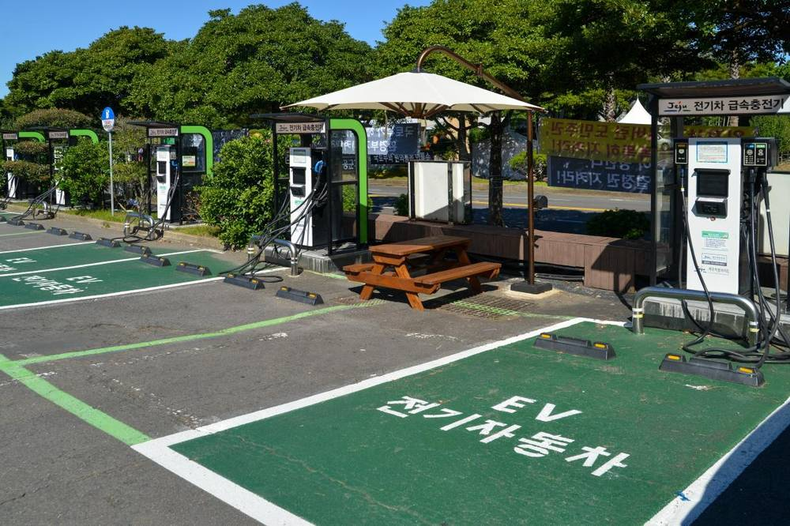

"싸고 빠른 발전소는 수요 속에 있다"…전력수요 100GW 시대, 저녁엔 줄이고 낮엔 늘리는 '부하이전' 키우자

우종률 고려대 에너지환경대학원 교수 기고…12차 전기본 수요관리 목표 20.8GW를 실제 자원으로 만들 세 가지 조건
전력 부족과 재생에너지 버리기를 함께 풀려면 발전소를 더 짓기보다 전기를 쓰는 시간을 옮기는 수요 쪽 해법을 서둘러야 한다는 전문가 제안이 나왔다. 우종률 고려대 에너지환경대학원 교수는 14일 기고에서 올해 8월 7일 저녁 전력수요가 95.3GW까지 오른 반면 지난해 육지에서만 태양광·풍력 출력제어가 82회 있었다며, 여름 저녁엔 빠듯하고 봄가을 낮엔 남아 버리는 구조를 짚었다. 그는 연구팀 모형 분석에서 전기차 충전요금을 낮엔 싸게, 저녁엔 비싸게 매기고 직장 충전기를 늘리자 버려지는 재생에너지가 5%에서 2%로 줄고 14조 원어치 ESS가 필요 없어졌다고 소개했다. 12차 전력수급기본계획 수요 전망안에는 수요관리로 2040년 최대전력을 20.8GW 줄이는 목표가 담겼지만, 목표를 적는 것과 확보하는 것은 다르다는 것이 그의 진단이다. 우 교수는 수요관리를 발전소와 같은 저울에 올려 해마다 실적을 점검하고, 가정과 전기차의 작은 자원을 모은 사업자가 비상 때만이 아니라 평소에도 시장에서 값을 받게 하며, 시간대별 요금과 자동제어 기반을 갖추자고 제안했다.
시민에너지 관점
영국은 가정의 전기차와 난방을 묶어 평소 시장에서 값을 받게 했고, EU는 2년마다 유연성 수요를 평가해 국가 목표를 세우도록 했다. 대형 발전소와 송전망을 짓는 데 여러 해가 걸리는 동안, 아파트 주차장과 마을 회관의 충전기·배터리는 몇 달이면 움직일 수 있는 자원이다. 이런 작은 자원을 모으는 주체가 대기업 중개사만이 아니라 에너지협동조합과 주민 발전소가 될 때, 낮에 남는 햇빛 전기의 이익도 동네에 남는다. 정부는 가정·전기차 수요반응을 상시 시장에 열면서 협동조합도 모집 사업자로 참여할 수 있게 문턱을 낮춰야 한다.
출처: 지디넷코리아 2026-11-14 우종률(기고) 원문 보기
「安くて速い発電所は需要の中にある」…電力需要100GW時代、夕方は減らし昼は増やす「負荷移動」を育てよう
ウ・ジョンリュル高麗大学エネルギー環境大学院教授が寄稿…第12次電力需給基本計画の需要管理目標20.8GWを実際の資源にする3つの条件
電力不足と再生可能エネルギーの切り捨てを同時に解くには、発電所を増やすより電気を使う時間を移す需要側の解決策を急ぐべきだとの専門家の提案が出た。ウ・ジョンリュル高麗大学エネルギー環境大学院教授は14日の寄稿で、今年8月7日夕方に電力需要が95.3GWまで上がった一方、昨年は本土だけで太陽光・風力の出力制御が82回あったとして、夏の夕方は逼迫し春秋の昼は余って捨てる構造を指摘した。研究チームのモデル分析では、電気自動車の充電料金を昼は安く夕方は高くし、職場の充電器を増やしたところ、捨てられる再エネが5%から2%に減り、14兆ウォン分のESSが不要になったと紹介した。第12次電力需給基本計画の需要見通し案には需要管理で2040年の最大電力を20.8GW減らす目標が盛り込まれたが、目標を書くことと確保することは違うというのが教授の診断だ。教授は需要管理を発電所と同じ物差しにかけて毎年実績を点検し、家庭や電気自動車の小さな資源を束ねる事業者が非常時だけでなく平時にも市場で対価を得られるようにし、時間帯別料金と自動制御の基盤を整えるよう提案した。
市民エネルギーの視点
英国は家庭の電気自動車や暖房を束ねて平時の市場で対価を得られるようにし、EUは2年ごとに柔軟性の需要を評価して国の目標を立てるよう定めた。大型発電所と送電網の建設に何年もかかる間、マンションの駐車場や村の会館の充電器・蓄電池は数カ月で動かせる資源だ。こうした小さな資源を束ねる担い手が大企業の仲介業者だけでなくエネルギー協同組合や住民の発電所になれば、昼に余る太陽光の電気の利益も地域に残る。政府は家庭・電気自動車のデマンドレスポンスを常時市場に開き、協同組合もアグリゲーターとして参加できるよう敷居を下げるべきだ。
出典: 지디넷코리아 2026-11-14 우종률(기고) 原文を読む
“便宜又快的电厂就在需求之中”…电力需求100GW时代，应发展晚间少用、白天多用的“负荷转移”
高丽大学能源环境研究生院教授禹钟律撰文：让第12次电力供需基本计划需求管理目标20.8GW成为真正资源的三个条件
有专家提出，要同时解决电力短缺和可再生能源弃电问题，与其多建电厂，不如加快发展转移用电时间的需求侧方案。高丽大学能源环境研究生院教授禹钟律14日撰文指出，今年8月7日傍晚电力需求升至95.3GW，而去年仅本土就发生82次光伏、风电出力控制，形成夏季傍晚紧张、春秋白天过剩被弃的结构。他介绍，研究团队的模型分析显示，把电动汽车充电价格定为白天便宜、晚间昂贵，并增加单位充电桩后，被弃的可再生能源由5%降至2%，原本需要的14万亿韩元储能也不再需要。第12次电力供需基本计划需求展望草案提出通过需求管理在2040年削减最大负荷20.8GW，但他认为写下目标与真正确保是两回事。禹教授建议把需求管理与电厂放在同一杆秤上每年检查实绩，让聚合家庭和电动汽车小型资源的运营商不仅在紧急时、平时也能在市场获得报酬，并完善分时电价和自动控制基础。
市民能源视角
英国已把家庭电动汽车和供暖聚合起来在平时市场获得报酬，欧盟则规定每两年评估一次灵活性需求并制定国家目标。建设大型电厂和输电网需要多年，而公寓停车场和村会馆的充电桩、电池几个月就能调动起来。当聚合这些小资源的主体不只是大企业中介，还有能源合作社和居民电站时，白天富余光伏电力的收益也会留在社区。政府应把家庭和电动汽车需求响应向常设市场开放，并降低门槛让合作社也能作为聚合商参与。
来源: 지디넷코리아 2026-11-14 우종률(기고) 查看原文
'The cheapest, fastest power plant lies in demand': expert urges load shifting for Korea's 100 GW era
Column by Korea University professor Woo Jong-ryul on three conditions for turning the 12th Basic Plan's 20.8 GW demand-management target into a real resource
Korea should move quickly on demand-side solutions that shift when electricity is used, rather than simply building more plants, to tackle both power shortages and wasted renewable output, an expert argued. In a column on the 14th, Woo Jong-ryul, a professor at Korea University's Graduate School of Energy and Environment, noted that demand peaked at 95.3 GW on the evening of August 7 this year, while solar and wind output was curtailed 82 times on the mainland alone last year, leaving supply tight on summer evenings and wasted on spring and autumn afternoons. He said his team's modelling found that pricing EV charging cheaply by day and expensively in the evening, together with more workplace chargers, cut wasted renewables from 5% to 2% and removed the need for 14 trillion won of battery storage. The draft demand outlook of the 12th Basic Plan for Electricity targets a 20.8 GW cut in 2040 peak demand through demand management, but he warned that writing down a target is not the same as securing it. Woo proposed weighing demand management against power plants and checking delivery every year, letting aggregators of household and EV resources earn market payments routinely rather than only in emergencies, and building time-of-use tariffs and automated controls.
Citizen Energy View
Britain lets households' EVs and heating earn money in everyday markets, and the EU requires member states to assess flexibility needs every two years and set national targets. While large plants and transmission lines take years, chargers and batteries in apartment car parks and village halls can be mobilised within months. If energy cooperatives and community power plants, not just big corporate aggregators, pool these small resources, the value of surplus daytime solar stays in the neighbourhood. The government should open household and EV demand response to permanent markets and lower the barriers so cooperatives can take part as aggregators.
Source: 지디넷코리아 2026-11-14 우종률(기고) Read the original